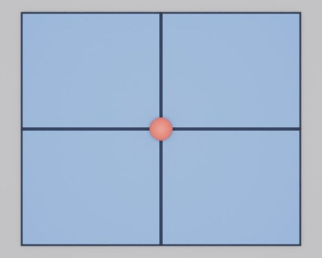
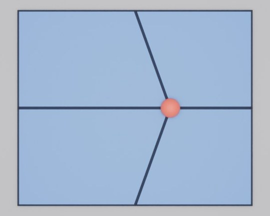

Bonus lesson
Slide Vertices
Slide Vertices moves a vertex along one of its adjacent edges. In Edit Mode, find it under Vertex › Slide Vertices, or press Shift+V. You can also press G twice.
1. Vertex selected

2. After Slide Vertices

How it works
Press Shift+V to start. The selected vertex nearest to the mouse cursor is the control one. Move the mouse along the direction of the edge you want, then click the left mouse button to confirm.
Options
- Even (E): by default, the offset is a percentage of the edge length. With Even on, vertices shift by an absolute value.
- Flipped (F): vertices move the same distance from adjacent vertices, instead of from their original position.
- Clamp (Alt or C): turns on or off keeping the slide within the edge extents.
Read the manual page on Slide Vertices.
Try it
This exercise is our own suggestion and has not been run step by step in the GUI. Add a plane, enter Edit Mode and subdivide it once so it has a middle vertex. Select that vertex, press Shift+V, move the mouse along one edge and click. Use Ctrl+Z to undo.